Record 01
저명한 과학자인 구양자 박사는 어떤 실험을 계획했다.
Experiment record / participant brief
구양자 박사의 실험시설. 잠에서 깨어난 피험자들 앞에 놓인 것은 기능이 정지된 안드로이드와, 두 개의 문과, 한 시간 뒤의 투표였다.
부디 여러분께 어떤 실험에 대한 협력을 부탁하고 싶어요.
실험 내용은 미리 설명해 버리면 의미가 없기 때문에,
지금 당장은 알려줄 수 없네요.
하지만 여러분의 역할은 실험이 끝날 때쯤 밝혀질 거예요.
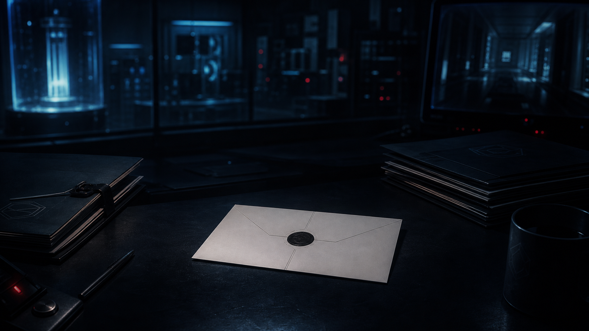
저명한 과학자인 구양자 박사는 어떤 실험을 계획했다.
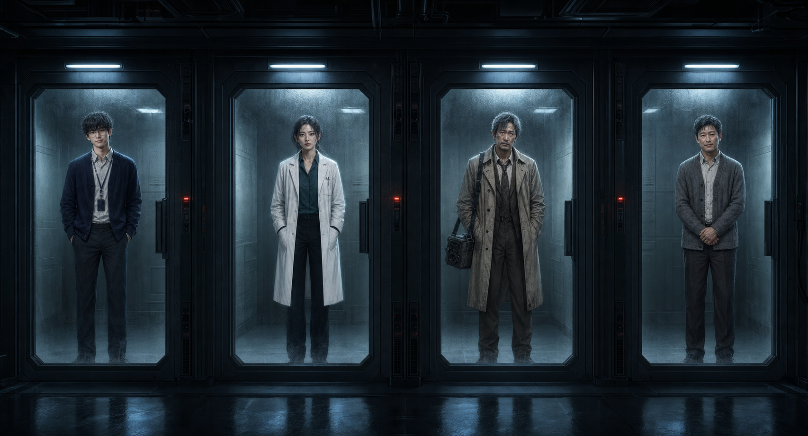
피험자로 모인 박사의 ⌜조수⌟, 박사의 친구이기도 한 ⌜의사⌟, 박사의 특집 기사를 썼던 ⌜기자⌟, 여기에 박사의 ⌜남편⌟도 이 실험에 참여하게 된 것 같다.
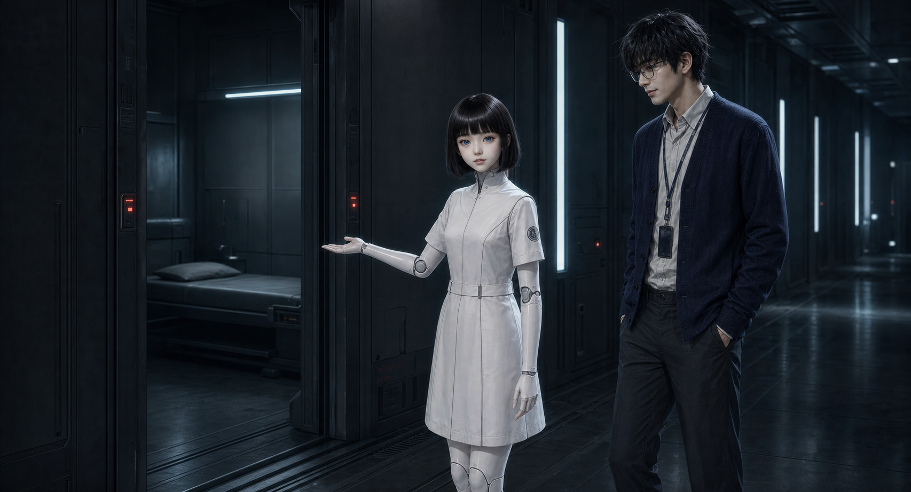
피험자들은 어느 날 밤, 실험시설에 모였다. 하지만 각 피험자는 도착 직후 바로 자신의 개인실로 안내를 받았기 때문에, 이 시점에서는 서로 얼굴을 마주친 일이 없었고, 다른 누가 참여하고 있는지도 몰랐다.
피험자들을 안내하는 역할을 맡은 것은 박사가 개발한 AI를 탑재한 안드로이드 ⌜웬디⌟. 인간과 분간할 수 없을 정도의 외형이었지만, 정신 연령은 12살 정도라고 한다.
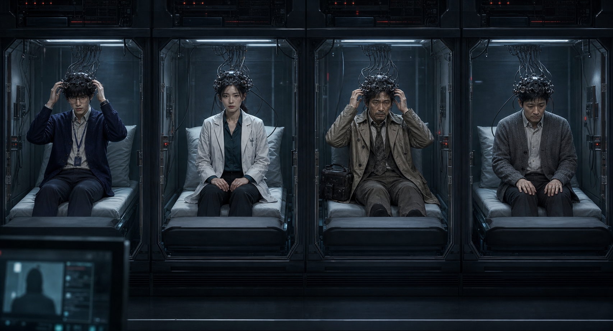
웬디의 안내를 받아 개인실로 들어간 피험자들은 기묘한 헤드장치를 착용하고 침대에 누우라는 지시를 받았다.
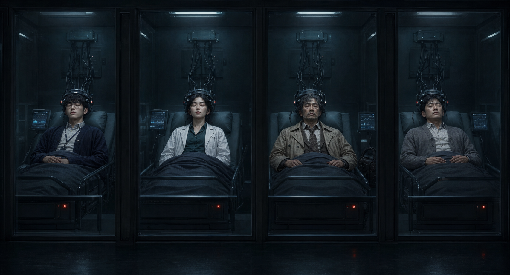
웬디가 퇴실한 후, 피험자들은 그대로 잠들어 버렸다.
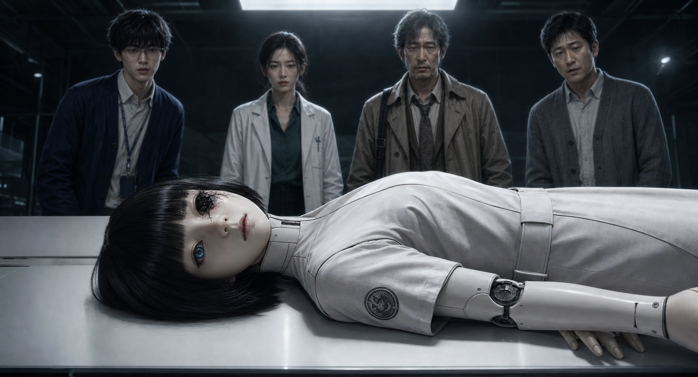
얼마 후 깨어나 개인실을 나온 피험자들이 발견한 것은 겁에 질린 모습으로 기능이 정지된 웬디였다.
웬디는 메인 룸의 하얀 테이블 위에 천장을 바라보며 누워 있었는데, 왼쪽 눈, 즉 안구형 카메라가 도려내어 있었고, 그곳에서 마치 피 같은 붉은 액체를 흘리고 있었다.
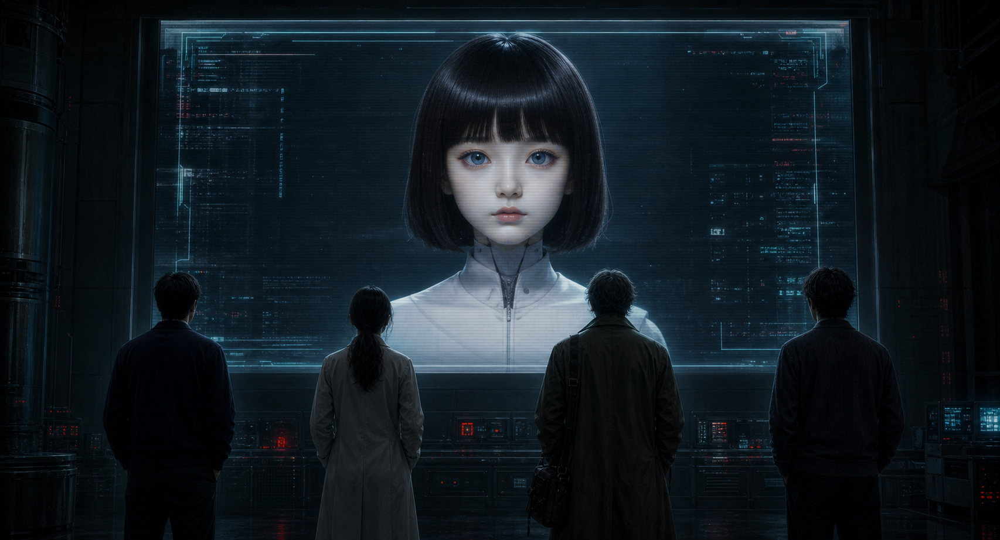
피험자들이 놀라는 가운데, 갑자기 거대한 모니터에 웬디의 모습이 나타나더니 태연하게 이야기를 시작했다. ⌜슬픈 일이지만, 제가 살해당한 것 같아요. 그 범인은 여러분 중에 있는 게 틀림없어요. — 여기 두 개의 문이 있네요?⌟
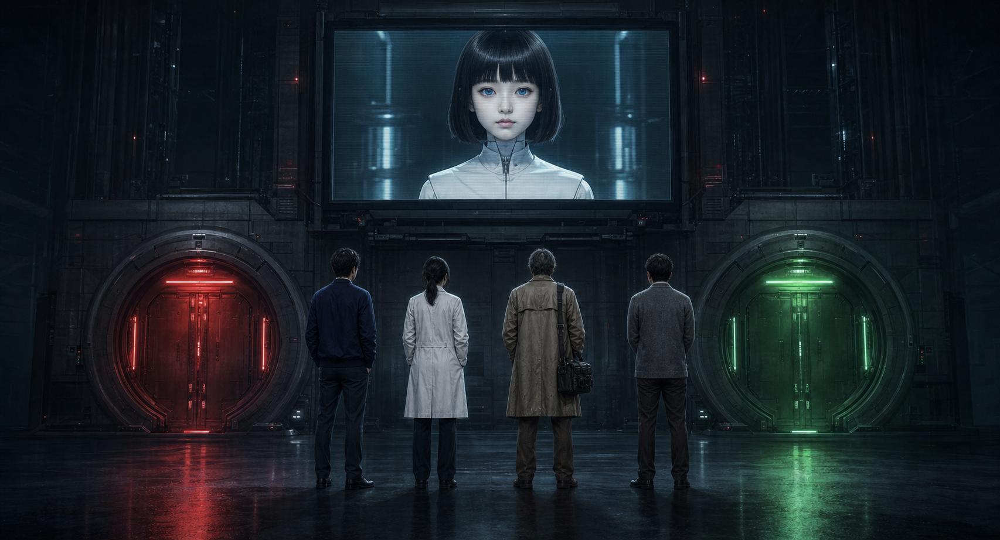
웬디의 말대로, 모니터 왼쪽에는 ⌜빨간 문⌟이, 오른쪽에는 ⌜초록 문⌟이 보인다.
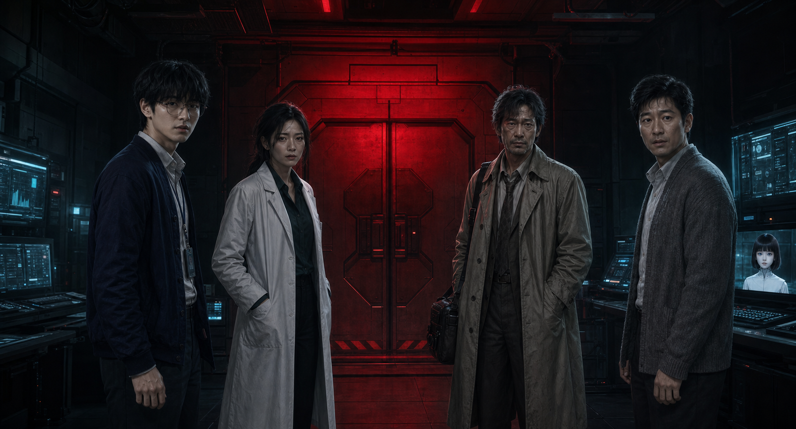
⌜구양자 박사로부터의 메시지가 있습니다. — 이것은 죄를 지은 당신들에 대한 페널티이다. 앞으로 당신들의 행동에 따라 두 개의 문 중 어느 하나의 문만 열린다. 다만 『빨간 문』을 열었다면 당신들 모두가 이 실험시설에 갇히게 될 것이다. 무사히 나가고 싶다면 『초록 문』을 열어라.⌟
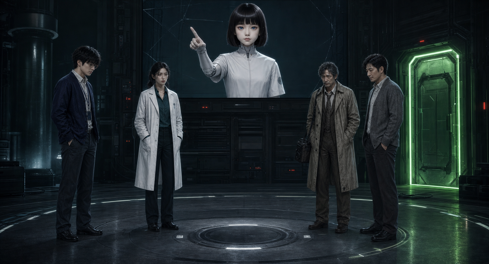
웬디는 오른쪽 — 초록 문을 가리키며 계속 전언을 이어갔다. ⌜이쪽 문이 열리는 조건은 『당신들 중 누군가를 제물로 삼는 것』이다. 제물은 당신들이 투표를 통해 결정해야 한다. 여기에 웬디도 투표권을 가지고 있으며, 웬디 본인도 투표의 대상이기도 하다.⌟
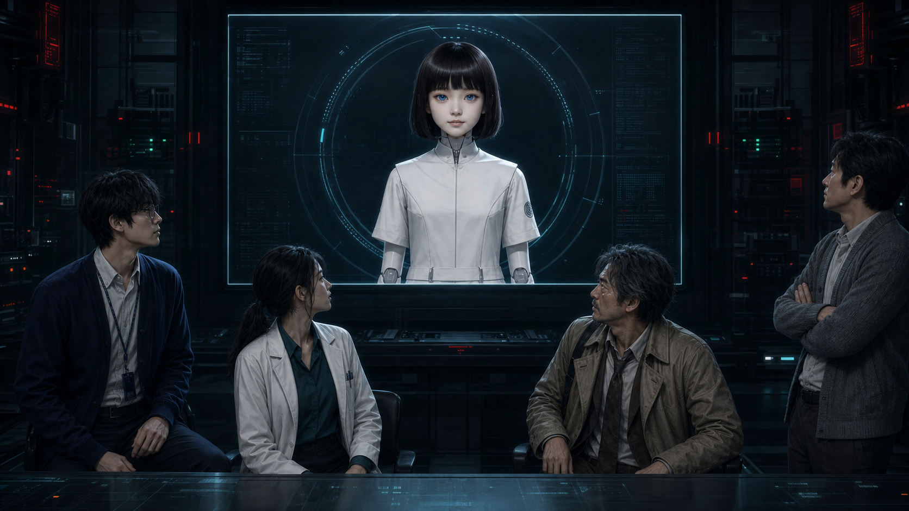
그리고 웬디는 피험자들을 향해 미소를 지었다. ⌜지금, 정확히 오전 9시입니다. 모두 1시간 정도 이야기를 나눈 후, 투표를 하죠. 지금으로서의 저는 『저를 죽인 사람』에게 투표할 예정이니 꼭 범인을 가르쳐 주세요.⌟
이제 남은 것은 한 시간의 대화와, 누군가의 이름을 적는 손뿐이다.
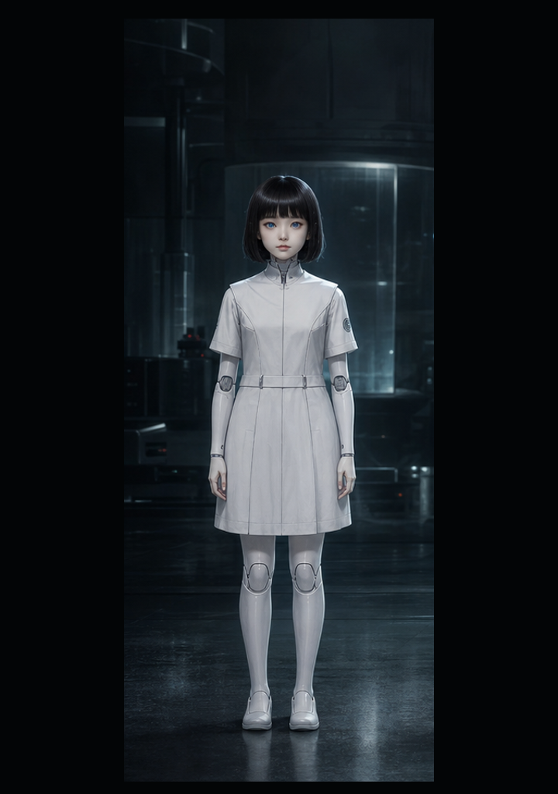
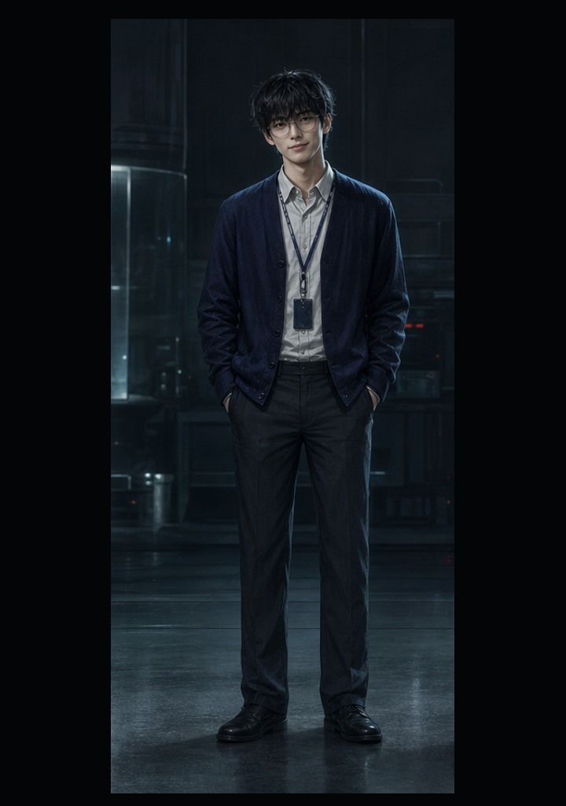
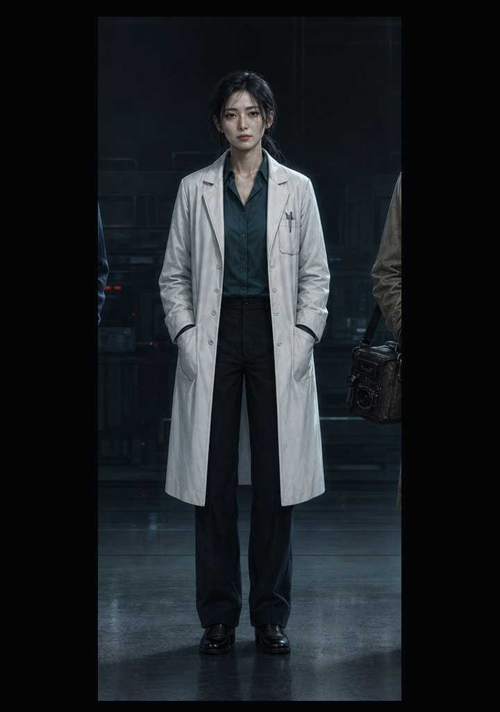
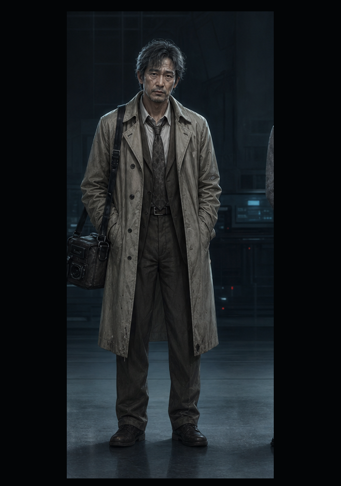
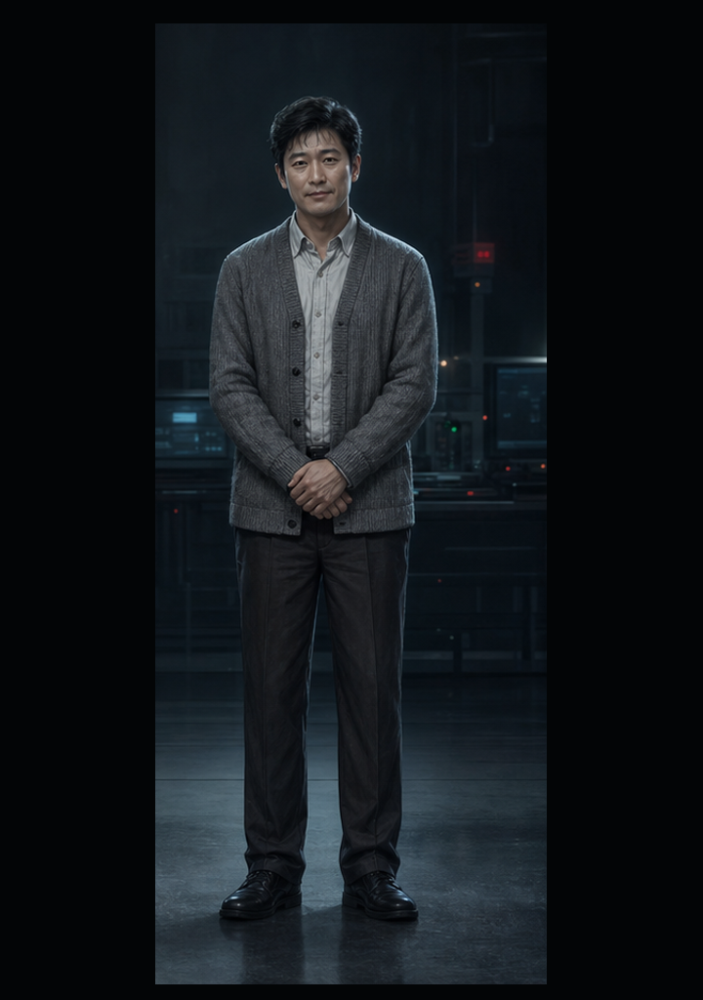
죽은 몸체와 살아 있는 영상. 닫힌 문과 열릴 문. 이 실험시설에서 나가기 위해, 피험자들은 웬디를 죽인 사람의 이름을 찾아야 한다.